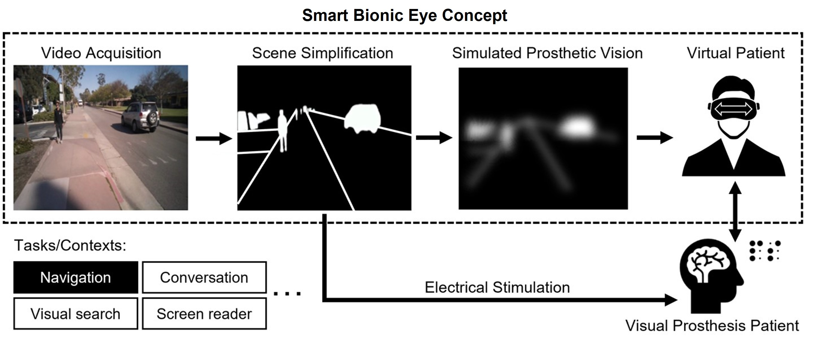

We present a systematic literature review of 227 publications from 106 different venues assessing the potential of XR technology to further visual accessibility.
Towards a Smart Bionic Eye
Rather than aiming to one day restore natural vision (which may remain elusive until we fully understand the neural code of vision), we might be better off thinking about how to create practical and useful artificial vision now. Specifically, a visual prosthesis has the potential to provide visual augmentations through the means of artificial intelligence (AI) based scene understanding (e.g., by highlighting important objects), tailored to specific real-world tasks that are known to affect the quality of life of people who are blind (e.g., face recognition, outdoor navigation, self-care).
In the future, these visual augmentations could be combined with GPS to give directions, warn users of impending dangers in their immediate surroundings, or even extend the range of visible light with the use of an infrared sensor (think bionic night-time vision). Once the quality of the generated artificial vision reaches a certain threshold, there are a lot of exciting avenues to pursue.

For many visually impaired, no effective treatments exist. With the help of a $1.5M grant, #UCSB's @ProfBeyeler will work to create an AI-powered bionic eye to generate artificial vision and increase the quality of life for millions affected by blindness. https://t.co/bdj9geIVYw
— UC Santa Barbara (@ucsantabarbara) October 7, 2022
Project Leads:
PhD Student
PhD Student
Project Affiliate:
Research Assistant
Principal Investigator:
Assistant Professor
Collaborators:
Professor
Universidad Miguel Hernández, Spain
Associate Professor
Johns Hopkins University
Professor
University of Michigan, Ann Arbor
Associate Professor
University of Minnesota
DP2-LM014268:
Towards a Smart Bionic Eye: AI-Powered Artificial Vision for the Treatment of Incurable Blindness
PI: Michael Beyeler (UCSB)
September 2022 - August 2027
Common Fund, Office of the Director (OD); National Library of Medicine (NLM)
National Institutes of Health (NIH)
Publications
A systematic review of extended reality (XR) for understanding and augmenting vision loss
Justin Kasowski, Byron A. Johnson, Ryan Neydavood, Anvitha Akkaraju, Michael Beyeler Journal of Vision 23(5):5, 1–24
(Note: JK and BAJ are co-first authors.)

The relative importance of depth cues and semantic edges for indoor mobility using simulated prosthetic vision in immersive virtual reality
We used a neurobiologically inspired model of simulated prosthetic vision in an immersive virtual reality environment to test the relative importance of semantic edges and relative depth cues to support the ability to avoid obstacles and identify objects.
Alex Rasla, Michael Beyeler 28th ACM Symposium on Virtual Reality Software and Technology (VRST) ‘22

Towards a Smart Bionic Eye: AI-powered artificial vision for the treatment of incurable blindness
Rather than aiming to represent the visual scene as naturally as possible, a Smart Bionic Eye could provide visual augmentations through the means of artificial intelligence–based scene understanding, tailored to specific real-world tasks that are known to affect the quality of life of people who are blind.
Michael Beyeler, Melani Sanchez-Garcia Journal of Neural Engineering

Deep learning-based scene simplification for bionic vision
We combined deep learning-based scene simplification strategies with a psychophysically validated computational model of the retina to generate realistic predictions of simulated prosthetic vision.
Nicole Han, Sudhanshu Srivastava, Aiwen Xu, Devi Klein, Michael Beyeler ACM Augmented Humans (AHs) ‘21